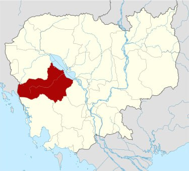
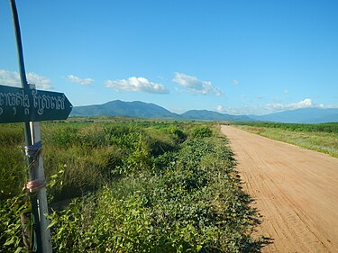

GO HOME
ខេត្តពោធិ៍សាត់
ខេត្តពោធិ៍សាត់ជាខេត្តមួយនៅភាគខាងលិចនៃប្រទេសកម្ពុជា។ ខេត្តពោធិ៍សាត់មានទីរួមខេត្តនៅ
ក្រុងពោធិ៍សាត់។ ខេត្តពោធិ៍សាត់គឺជាខេត្តមួយដែលសិ្ថតនៅក្នុងតំបន់បឹងទនេ្លសាប មានទីតាំង
នៅទិសបចិ្ចមនៃប្រទេស។ ខេត្តពោធិ៍សាត់មានប្រជារាស្ត្រ ៣៦០ ៤៤៥ នាក់ ក្នុងនោះ ប្រុស ១៧២
៨៩០ នាក់ ស្រី ១៨៧ ៥៥៥ នាក់ ។ ស្រ្តី ៥២,០ ភាគរយនៃប្រជារាស្ត្រសរុបក្នុងខេត្ត ។ ស្ថិតនៅ
ភាគខាងលិចនៃប្រទេស និងមានព្រំប្រទល់ពីខាងជើងជាប់ខេត្តបាត់ដំបង បឹងទន្លេសាប
ខាងលិចជាប់ខេត្តកំពង់ឆ្នាំង ខាងត្បូងជាប់នឹងខេត្តកំពង់ស្ពឺ ខេត្តកោះកុង និងខាងលិចជាប់នឹង
ប្រទេសថៃ។ ហើយក៏ស្ថិតនៅចន្លោះ បឹងទន្លេសាប និងចុងខាងជើងនៃជួរភ្នំក្រវាញ។ ទន្លេពោធិសាត់
កាត់ខេត្តនេះហូរពីជួរភ្នំក្រវាញនៅភាគខាងលិចទៅទន្លេសាបខាងកើត។ ខេត្តនេះរួមមាន ៦ស្រុក
៧សង្កាត់ ៤២ឃុំ និង ៤៩៥ភូមិ ។ ប្រជារា្រស្តនៅក្នុងខេត្តនេះមាន ៣,២ភាគរយនៃប្រជារា្រស្តទូទាំង
ប្រទេសកម្ពុជា។ ដង់ស៊ីតេប្រជារា្រស្តរបស់ខេត្ត គឺ២៨ នាក់ ក្នុងមួយគីឡូម៉ែត្រការ៉េទាបជាងដង់ស៊ីតេ
ថ្នាក់ជាតិដែលមានតែ ៦៤នាក់ ក្នុងមួយគីឡូម៉ែត្រការ៉េ ។

ទិដ្ឋភាពភ្នំក្រវាញ
|

ផែនទីខេត្តពោធិ៍សាត់
|
ប្រវត្តិ
តាមពាក្យពីព្រេងនាយដំណាលថា មានដើមពោធិ៍មួយដើមរសាត់ច្រាសទឹកដ៏ប្លែកអស្ចារ្យ ឃើញដូច្នេះអ្នក
ស្រុកក៏នាំគ្នាយកខ្សែពួរទៅទាក់ចងតែមិនជាប់ ហើយបន្តរសាត់ដល់កន្លែងមួយត្រង់ខាងមុខទីប្រាសាទ
ព្រះខ័ន។ រសាត់មកដល់ទីនេះ ព្រះសង្ឃ និងអ្នកស្រុក បានរៀបចំគ្រឿងពលីការបូជាទៀន ធូប ផ្កាភ្ញី
ដោយអធិដ្ឋានបួងសួងសុំយាងដើមពោធិ៍ ដើម្បីប្រតិដ្ឋានដាំទុកនៅទីតាំងនោះ។ព្រះសង្ឃបានយកខ្សែអំបោះ
៧សរសៃទៅចងដើមពោធិ៍ រួចប្រគំភ្លេងពិណពាទ្យថ្វាយដើមពោធិ៍ ស្រាប់តែដើមពោធិ៍នោះ ត្រូវបានអ្នក
ស្រុកអូសតាមជម្រាលដីឡើងច្រាំងខាងកើតប្រាសាទព្រះខ័ន បានដោយងាយ។ អ្នកស្រុកក៏ស្រែកអឺងកង
ឡើងថា "បានការ...បានការ" ហើយទួលនេះបានជាប់ឈ្មោះ "ទួលបានការ" តរៀងមក ដែលបច្ចុប្បន្ន
ទួលនេះ ឋិតនៅខាងកើតវត្តបាកាន ក្នុងទឹកដីស្រុកបាកាន។ដោយសារប្រាសាទព្រះខ័ន មានបារមីខ្លាំងពូកែ
និងបួងសួងសុំកំណប់ទ្រព្យអ្វីបាននោះ ដំណឹងបានលេចឮដល់កងទ័ពសៀម ដែលនៅក្បែរព្រំដែនស្វាយដូនកែវ
និងចង់មកជីកយកវត្ថុមានតម្លៃទាំងនោះ។ អ្នកស្រុក និងព្រះសង្ឃក៏នាំគ្នាលើកដីពូនលុបប្រាសាទ ក្នុង
បំណងលាក់ទុកអាថ៌កំបាំងដោយយកដើមពោធិ៍ទៅដាំលើចំហៀងកូនភ្នំ និងប្ដូរឈ្មោះមកជា "បាកាន" វិញ
ដែលបច្ចុប្បន្នគេហៅថា ស្រុកបាកាន។ក្រៅពីខ្លឹមសារដកស្រង់ចេញពីសៀវភៅកម្ពុជសុរិយាឆ្នាំ២០០៣ ត្រង់ទំព័រ
៦២នេះ នៅក្នុងវចនានុក្រមសម្ដេចសង្ឃរាជ ជួន ណាត ត្រង់ទំព័រ ៧៧៩ បញ្ជាក់ថា ពោធិ៍សាត់ គឺជាឈ្ម
ោះខេត្តមួយក្នុងកម្ពុជារដ្ឋ នៅជាប់ខាងកើតខេត្តបាត់ដំបង។ តាមពាក្យដំណាលពីព្រេងនាយថា មានដើម
ពោធិ៍តូចមួយរសាត់ច្រាសទឹកមកជាអស្ចារ្យប្លែក ហើយគេបានស្រង់យកទៅដាំនៅកន្លែងមួយ។ ដោយហេតុដូច្នេះ
ទើបឲ្យឈ្មោះភូមិប្រទេសនោះថា ពោធិ៍សាត់ ព្រោះពាក្យថា រសាត់ និងសាត់ ជាពាក្យតែមួយអាចប្រើជួសគ្នាបាន។
លុះសំណេរជាយូរអង្វែងមក បានក្លាយជា "ពោធិ៍សាត់" រហូតដល់សព្វថ្ងៃ។
រដ្ឋបាលខេត្ត
ខេត្តពោធិ៍សាត់ ជាដែនរដ្ឋបាលស្ថិតនៅ ប្រទេសកម្ពុជា មាន ៥ស្រុក ១ក្រុង ៤០ឃុំ ១០សង្កាត់ និង ភូមិ÷
|
ស្រុក
|
ជាអក្សរឡាតាំង
|
ឃុំ សង្កាត់
|
ភូមិ
|
|
បាកាន
|
Bakan District
|
១០
|
១៥៣
|
|
កណ្តៀង
|
Kandieng District
|
៩
|
១១០
|
|
ក្រគរ
|
Krakor District
|
១១
|
១០៥
|
|
ភ្នំក្រវាញ
|
Phnom Kravanh District
|
៧
|
៥៧
|
|
ក្រុងពោធិ៍សាត់
|
Pursat Municipality
|
៧
|
៦៦
|
|
វាលវែង
|
Veal Veaeng District
|
៥
|
២០
|
|
តាលោសែនជ័យ
|
Talo Sen Chy District
|
២
|
៣៥
|
តំបន់ទេសចរណ៍ក្នុងខេត្ត
បូជនីយដ្ឋានអ្នកតាឃ្លាំងមឿង៖ បូជនីយដ្ឋានអ្នកតាឃ្លាំងមឿងជាបូជនីដ្ឋានប្រវត្តិសាស្ត្រនិងជាទីសក្ការបូជារបស់ប្រជាជនខ្មែរ ស្ថិតតនៅចម្ងាយ៦គីឡូម៉ែត្រពីទីរួមខេត្ដ ក្នុងឃុំស្នាមព្រះ ស្រុកបាកាន។ ទីនេះជាតំបន់ប្រវត្ដិសាស្ដ្រមួយយ៉ាងសំខាន់ ជាតំបន់ដែលរំលឹកឡើងវិញចំពោះវីរភាពអង់អាចក្លាហាន ហ៊ានបូជាជីវិតរបស់បុព្វបុរសខ្មែរយើង ក្នុងបុព្វហេតុការពារទឹកដី មាតុភូមិ ពីពួកចោរឈ្លានពាន។
តំបន់បាក់ត្រា៖ តំបន់បាក់ត្រាជារមណីយដ្ឋានធម្មជាតិ មានចម្ងាយ១៦គីឡូម៉ែត្រពីទីរួមខេត្ដតាមផ្លូវលេខ៥៦។ រមណីយដ្ឋាននេះមានកូនភ្នំ មានព្រៃ មានទឹកអូរធម្មជាតិ ដែលមានទឹកជាប្រចាំ និងសម្បូរដោយរុក្ខជាតិហូបផ្លែព្រៃដូចជា គុយ សិរមាន់ ជាដើម។
ភ្នំបាឃ្នះ៖ ភ្នំបាឃ្នះជារមណីយដ្ឋានវប្បធម៌ និង ធម្មជាតិ មានទីតាំងស្ថិតនៅ ភូមិត្នោតជុំ ឃុំត្នោតជុំ ស្រុកក្រគរ ចម្ងាយ២០គីឡូម៉ែត្រ ពីទីរួមខេត្ដ តាមផ្លូវជាតិលេខ៥
កំពង់ហ្លួង៖ កំពង់ហ្លួងមានទីតាំងស្ថិតនៅលើផ្ទៃបឹងទន្លេសាប ក្នុង ឃុំកំពង់ហ្លួង ស្រុកក្រគរ ចម្ងាយ៣៥គីឡូម៉ែត្រពីទីរួមខេត្ដ។ តំបន់នេះមានជ្រោយខ្សាច់ដែលជាទីសំរាប់ងូតទឹកលេងកំសាន្តនៅរដូវប្រាំងនៃផ្ទៃបឹងទន្លេសាប។ ចំណែកនៅរដូវវស្សាវិញ ជាពិសេសពេលបុណ្យភ្ជុំបិណ្ឌ គេឃើញមានប្រជាជននាំគ្នាលេងល្បែងកំសាន្តចោលទឹកល័ក្ខដាក់គ្នាលើផ្ទៃបឹងទន្លេសាប។
កំពែង៖ កំពែងមានទីតាំងស្ថិតនៅក្នុងភូមិព្រងិល ឃុំព្រងិល ស្រុកក្រវ៉ាញ ចម្ងាយ២០គីឡូម៉ែត្រពីទីរួមខេត្ដ។
ភ្នំដាក់ព្រះ៖ ភ្នំដាក់ព្រះមានចម្ងាយ១០គីឡូម៉ែត្រពីទីរួមខេត្ដ ក្នុងភូមិរលាប ][ឃុំរលាប]] ស្រុកពោធិ៍សាត់។
កោះសំពៅមាស៖ កោះសំពៅមាសមានទីតាំងស្ថិតនៅចំពីមុខសាលាខេត្ដពោធិ៍សាត់ មានផ្ទៃប្រមាណជាង ២ហិចតា។
ព្រះធាតុ៖ ព្រះធាតុមានទីតាំងស្ថិតនៅភូមិស្រែស្ដុក ឃុំស្រែស្ដុក ស្រុកកណ្ដៀង ចម្ងាយប្រមាណ២០គីឡូម៉ែត្រពីទីរួមខេត្ដ។
រមណីយដ្ឋានធម្មជាតិច្រកល្អៀង៖ មានទីតាំងស្ថិតនៅភូមិបំណក់ ឃុំឈើតុំ ស្រុកក្រគរ ខេត្តតពោធិ៍សាត់
ទឹកធ្លាក់ថ្មដារតូច ស្ថិតនៅភ្នំ1500 ឃុំថ្មដា ស្រុកវាលវែង ខេត្តពោធិ៍សាត់
ល្បាយកំរោញ: មានចម្ងាយប្រមាណ ៥៣គីឡូម៉ែត្រ ពីទីរួមខេត្តពោធិ៍សាត់ ធ្វើដំណើរតាមបណ្តោយផ្លូវជាតិលេខ ៥៥ ដល់ភូមិអង្រ្គង ឃុំសំរោង ស្រុកភ្នំក្រវាញ រួចបត់ចូលតាមផ្លូវគ្រួសក្រហមចម្ងាយ៧៥០ម៉ែត្រ
បឹងព្រះពន្លៃ: តំបន់នេះគឺជាតំបន់ដែរមានហ្វូងសត្វកុករាបពាន់ក្បាល ដែរអ្នកទេសចរអាចទស្សនាបានដែរស្ថិត នៅបឹងព្រះពន្លៃ ឃុំផ្ទះរុង ស្រុកតាលោសែនជ័យ ខេត្តពោធិ៍សាត់
ភ្នំទំព័រ: មានកម្ពស់១៥៥១ ម៉ែត្រជាភ្នំខ្ពស់ជាងគេលំដាប់ទី៣នៅកម្ពុជាបន្ទាប់ពីភ្នំឱរ៉ាល់ និងភ្នំសំកុសស្ថិតនៅភូមិទំព័រ ឃុំប្រមោយ ស្រុកវាលវែង ខេត្តពោធិ៍សាត់ (អ្នកស្រុកមួយចំនួនហៅថាភ្នំសំព័រ)។
សេដ្ឋកិច្ច
ផ្សារ៖
1.កណ្ដាល
2.កណ្ដៀង
3.ក្រោលក្របី
4.ក្បាលហុង
5.ក្រគ
6.ចំការចេក
7.ចំបក់
8.ត្រពាំងជង
9.ថ្មីពោធិ៍សាត់
10.បត់រំដួល
11.បាក់ចិញ្ចៀន
12.បាកាន
13បឹងខ្នារ
14.បំណក់
15.យាកាបលើ
16.លាច
17.សំពៅមាស
18.ស្វាយដូនកែវ
19.អូរតាប៉ោង
20.តាលោ
21.ផ្សាដើមគ
22.វត្តហ្លួង
23.ថ្លុកដង្កោ
24.ស្តុកត្នោត
25.អន្លង់រាប
26.ស្បូវរីក
27.កំពែង
28.ស្វាយប៉ាក
29.ក្បាលត្រាច
30.ស្នាមព្រះ
31.អ៊ីផា ឬក្បាលថ្នល់
32.មេទឹក
33.រំលេច
34.ត្រាំសេះ
35.ស្រះម្កាក់
36.ប្រមោយ
37.សំរោង
38.ទួលគ្រួស
39.វត្តស្រោង
40.បឹងកន្ទួត
41.ផ្សារទំនើបភួពុយ
42.ផ្សារចាស់